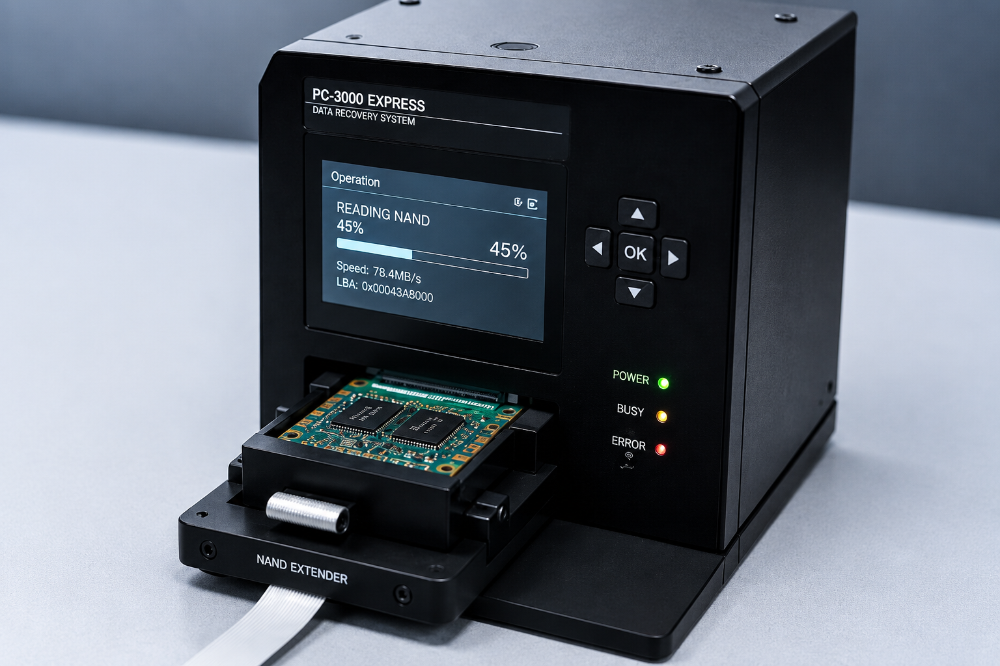
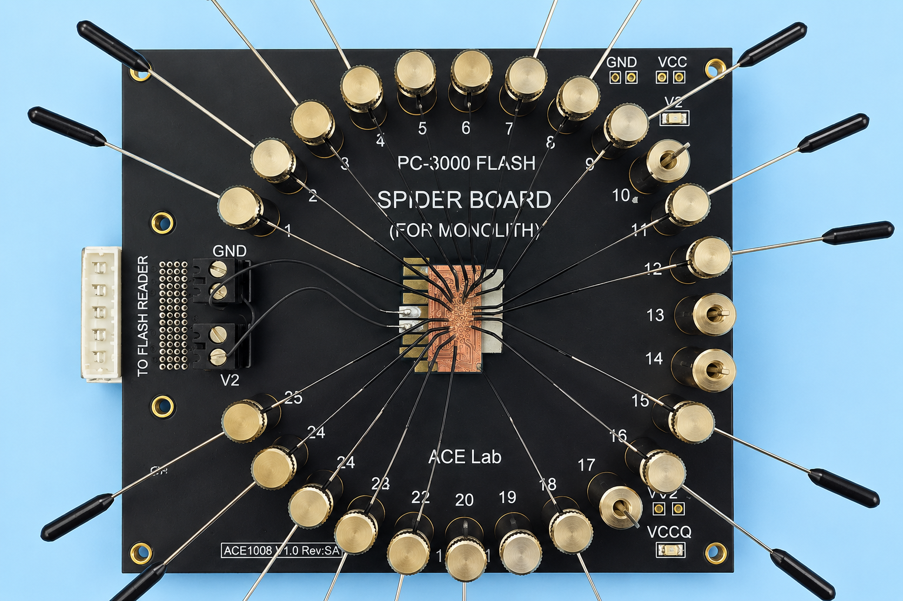

| 更新日時 | 2025/11/01 10:00 |
|---|---|
| 管理部門 | 開発部 / エンジニアリングチーム |
| 対象権限 | Lv.3 |
【技術マニュアル】PC-3000 / スパイダーボード 運用仕様
本マニュアルは、物理的・論理的に致命的な損傷を受けたストレージメディア（HDD、SSD、スマートフォン端末等）から生のデータを抽出するための専用診断・復旧装置「PC-3000」および「スパイダーボード（Spider Board）」の基本運用仕様を定めたものです。
これらの機材によって抽出されたダンプデータ（完全なバイナリデータ）は、オムニバス・コアが欠損領域を推論し、人格や記憶のモデルを再構築するための最も重要な一次ソース（入力データ）となります。担当エンジニアは、機材の取り扱いに細心の注意を払い、可能な限り完全な形でデータを吸い出してください。
主要機材の仕様と運用手順

PC-3000 (Data Recovery System)
用途： HDD、SSD、RAIDシステムなどのストレージに対する、工場出荷レベル（ファクトリーモード）での直接アクセスと診断、およびファームウェア（SA領域）の修復・書き換え。
運用手順：
OSやBIOSレベルで認識しなくなったドライブを当機材に接続し、ドライブ独自のテクノモード・コマンドを発行して強制的に認識させます。物理的な不良セクタ（バッドセクタ）をハードウェアレベルでスキップしながら、磁気プラッタの全領域からダンプデータ（セクタイメージ）を作成します。
注意事項： ヘッドのシークエラーが頻発する場合は、無理に読み取りを継続せず、クリーンルームでの物理的なヘッド交換作業を先行させてください。

Spider Board (Pinout Adapter)
用途： 基盤が完全に破壊されたUSBメモリ、SDカード、スマートフォンなどから取り外した「NANDフラッシュメモリチップ」への直接配線（ピンアウト）と、データの直接読み出し（チップオフ復旧）。
運用手順：
はんだ付けによる熱損傷リスクを回避するため、チップの微細な接点（コンタクトパッド）に対して、当機材の極細ピン（プローブ）を顕微鏡下で精密に位置合わせします。接続確立後、PC-3000 Flash等と連携してメモリ内部の生のバイナリデータを吸い出します。
注意事項： コントローラーチップを通さずに抽出したデータは、アルゴリズムによって暗号化・分散化された「ノイズの塊」となっています。吸い出した直後のデータの解読は、後工程のオムニバス・コアの推論エンジンに一任してください。
抽出データの連携プロトコル
上記機材を用いて抽出に成功したダンプデータは、ファイルシステムの再構築を行う前に、必ず当社のセキュアサーバー（第三データセンター連携ノード）を経由させてください。 これにより、抽出された純粋なユーザーデータがオムニバス・コアの学習モデルに自動的に同期されます。